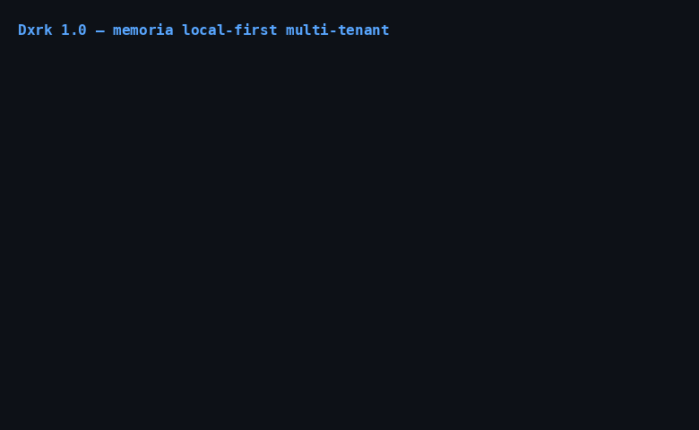

Multi-tenant en Dxrk

Dxrk aísla todos los datos por tenant bajo un layout de filesystem canónico.
Sin servidor, sin red: solo directorios con permisos restrictivos (diseño
detallado en adr/ADR-002-memory-separation.md, roadmap §3.3).
Layout
~/.dxrk/
├── tenants/
│ ├── _registry.json # {"tenants": [{"id", "display_name", ...}]}
│ ├── _active # id del tenant activo (texto plano)
│ └── {id}/
│ ├── palace/ # DxrkMemory 2.0 (sqlite FTS5, WAL 0o600)
│ ├── locks/ # locks de minería
│ ├── learn/ # datos del learner
│ └── sessions/ # sesiones del tenant
- Directorios
0o750, archivos0o600(verdxrk/tenant/migration.py). - El id de tenant se valida con
^[a-zA-Z0-9_-]{1,256}$(dxrk.security.jwt.validate_id): sin/,\, espacios ni... list_tenants()solo devuelve directorios con nombre válido y ordenados.
Tenant activo
Prioridad (de mayor a menor):
- Flag CLI
--tenant/-t(validado, falla conSystemExitsi es inválido). - Variable de entorno
DXRK_TENANT. - Archivo
tenants/_active. default(tras migración legacy, vermigration.md).
El switcher de la TUI (tenant_switcher) sigue la misma prioridad:
contexto explícito > entorno > _active.
CLI
dxrk-py tenant create acme # crea tenants/acme/ + subdirs
dxrk-py tenant list # lista ordenada
dxrk-py tenant switch acme # escribe _active
dxrk-py tenant current # muestra el activo
dxrk-py tenant whoami # activo según flag/env/_active
dxrk-py tenant delete acme --force # sin --force se niega
dxrk-py tenant migrate # legacy → tenants/default (idempotente)
dxrk-py --tenant acme <comando> # cualquier comando bajo ese tenant
create duplicado es idempotente; switch a un tenant inexistente falla.
Aislamiento verificado
- Palace/vault/JWT/RBAC/CLI:
tests/test_tenant_e2e.py(9 tests). - RBAC por rol:
tests/test_enterprise_rbac_matrix.py(25 tests). - JWT
tid+ vault HKDF:tests/test_enterprise_jwt_vault.py(18 tests). - CLI + migración + switcher TUI:
tests/test_enterprise_cli_migration.py(42 tests, incluye pilot real de la pantallatenant_switcher).
API
from dxrk.tenant import tenant_root, ensure_tenant, list_tenants, is_migrated
root = ensure_tenant("acme") # crea skeleton palace/locks/learn/sessions
Vault por tenant
dxrk/vault/__init__.py (TenantVaultRegistry): cada tenant deriva su clave
con HKDF (_derive_tenant_key, 32 bytes) desde la clave maestra
(DXRK_VAULT_KEY). Las entradas de acme son invisibles para bob y
viceversa; la derivación es determinista (mismo tenant, misma clave).